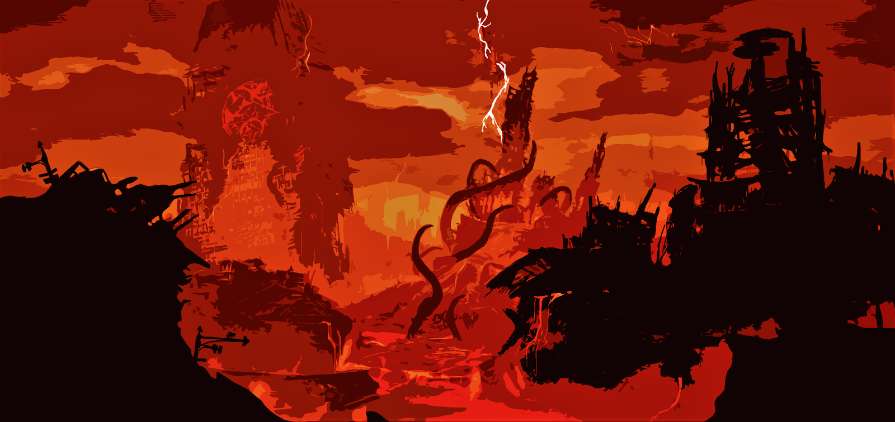
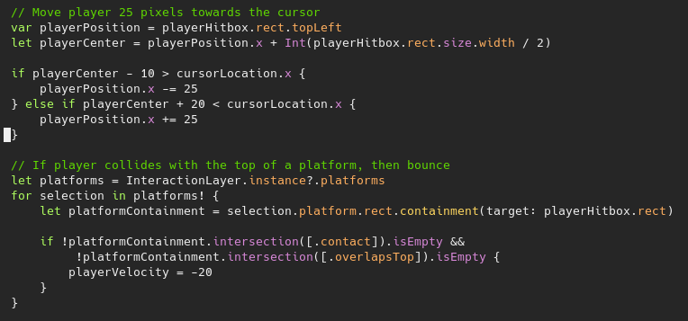
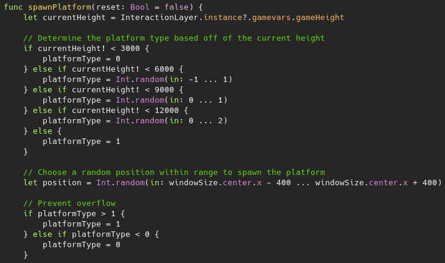
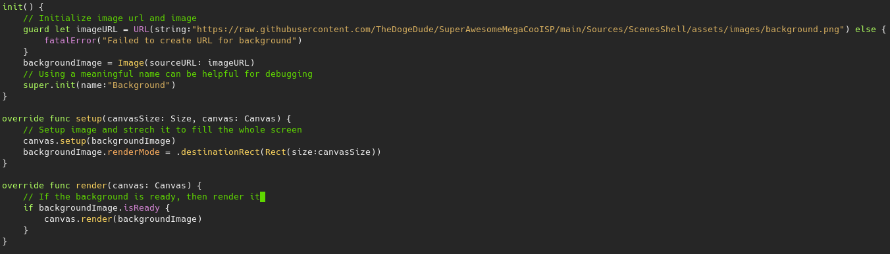

| Caysen Mayo | ISP | Classes | CS-II | About Me |
|---|
The player as Tux, the mascot of Linux. |
 Our background adds to the "extreme" aspect of the game. |
|---|
My ISP was heavily inspired by the real game Doodle Jump.
You control a black peguin while jumping from platform to platform avoiding the red falling peguin.
There are moving and static platforms and a scoreboard for your height.
My group and I enjoyed playing Doodle Jump so we wanted to create a knock off version of it.
As the name imples, it is extremely difficult!

This segment of code showcases how our collison system and our movement system worked.
The movement system works by finding where the cursor and the player are and moving the player towards the mouse if it's far away enough from the mouse.
The collison system works by using a containment to see if the player is in contact with a platform.

This segment of code showcases how the platforms spawned.
To start, it would first determine how far up the player was and pick a random number depending on the height.
Then it would determine where to spawn the platform using random numbers.

This segment of code showcases how our background image was displayed.
The image would first be initalized, then it would setup itself up, then render in the background layer.
The game itself turned out to be a success and was fun to make and play.
However, we did not have enough time to implent everything we wanted to and there were a few issues (not bugs) with the game in general.